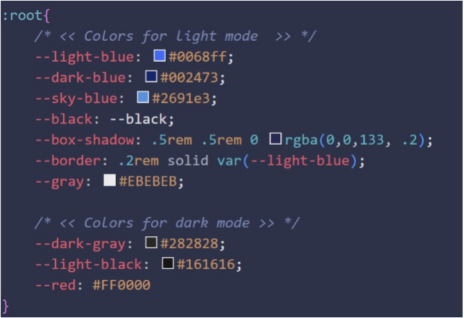

Our Enhancement
1. Dark mode – light mode (Entire website)
Response based on the user’s system setting:
- Being a medical oriented website, we thought of creating another version of our web that has an X-ray-esque feel to it (with black background and contrasting content). The light mode - dark mode thus, each delivers different feels/mood to the overall website.
- Having a second display mode for the website means that we can allow the users to have a personalised experience as they can freely “toggle” between light and dark mode in their system setting as long as it seems aesthetically pleasing.
Why Red (Dark mode) and Blue (Light mode)?
Blue and Red is perhaps one of the few colors that still “seem to go well together” despite them not following any color wheel theory.
In fact, there is more to do with the human brain. Blue and Red have always been seen together in situations that are pleasing, or just simply through repeated simulation in neutral contexts. Despite of not being the most pleasing color combos (in theory), Red and Blue wins in familiarity.
How we implement it
1. Color codes
We implemented two color groups for the light mode and dark mode. All contents, elements in light-blue will be set to red; the background will be set from default white to light-black. Any containers, including hero section with a gray background will be set to dark-gray.
Using the media query “prefers-color-scheme: dark” will let the program know that the below changes will only be applied to the web once the user’s system setting is set to dark mode.
2. Favicon
For our company’s logo displayed on the tab, we have utilized favicon to allow automatic toggle between two modes. Changing the display on the tab will provide a more holistic appearance for the entire web.
One downside of this feature is that after you change your system settings from light-> dark mode, you need to refresh the page once to updated this icon.